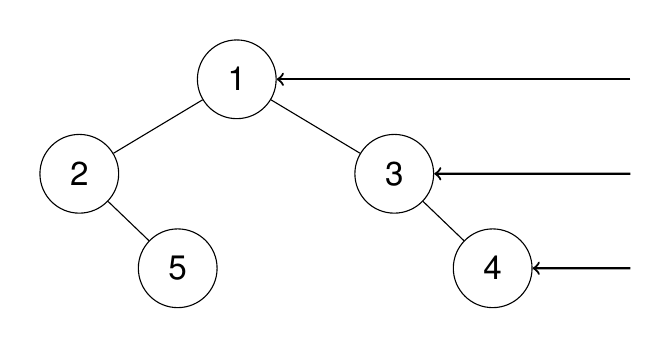
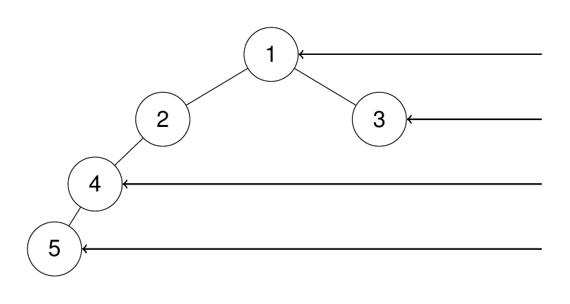

题面
给定一个二叉树的 根节点 root，想象自己站在它的右侧，按照从顶部到底部的顺序，返回从右侧所能看到的节点值。
示例 1：
输入： root = [1,2,3,null,5,null,4]
输出：[1,3,4]
解释：

示例 2：
输入： root = [1,2,3,4,null,null,null,5]
输出：[1,3,4,5]
解释：

示例 3：
输入： root = [1,null,3]
输出：[1,3]
示例 4：
输入： root = []
输出：[]
提示:
- 二叉树的节点个数的范围是
[0,100] -100 <= Node.val <= 100
思路
- 主要参考第 41 题（层序遍历），框架完全复用。层序遍历收集每层所有节点的值，右视图只需要收集每层最后一个节点的值（从右边看，每层只能看到最右边那个）
- 框架完全不变（queue、tmp、while 循环），唯一区别：
# 层序遍历：收集整层
vals.append(node.val)
res.append(vals)
# 右视图：只要每层最后一个
res.append(queue[-1].val)- 易错点：
- 取 `queue[-1].val` 不是 `tmp[-1]`：
queue是当前层，tmp是下一层的子节点。右视图要的是当前层最右边的节点 - `res.append()` 和 `queue = tmp` 必须在 for 循环外面：要等整层遍历完才做，放里面会导致每处理一个节点就替换 queue
- `if not root: return []`：返回空列表，不是
return（None），否则类型不匹配 - `if not tmp` 是"tmp 为空"的意思：别和
if tmp（"tmp 非空"）搞反
代码实现
class Solution:
def rightSideView(self, root: Optional[TreeNode]) -> List[int]:
if not root:
return []
res = []
queue = []
queue.append(root)
while queue:
tmp = []
res.append(queue[-1].val)
for node in queue:
if node.left:
tmp.append(node.left)
if node.right:
tmp.append(node.right)
queue = tmp
return res- 复杂度：时间 O(n)，空间 O(n)（队列最多存一层的节点数）